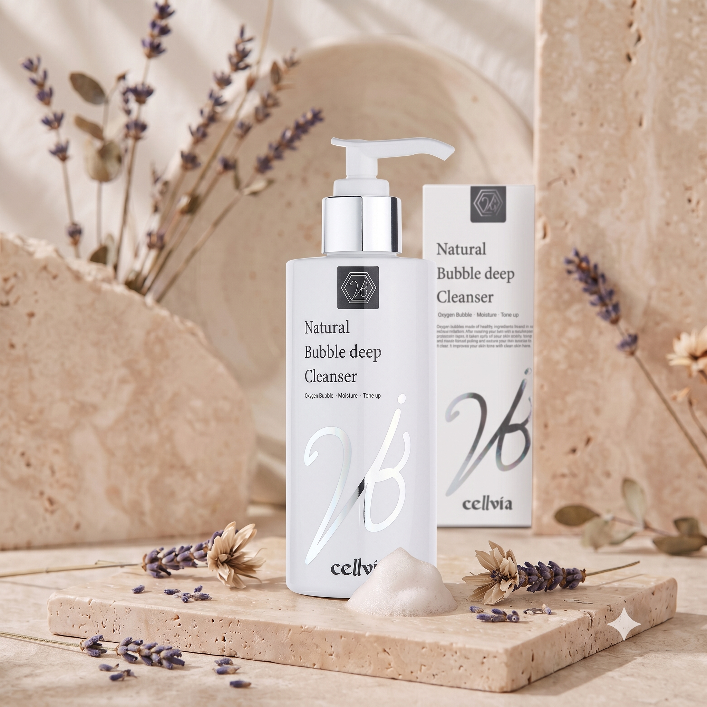
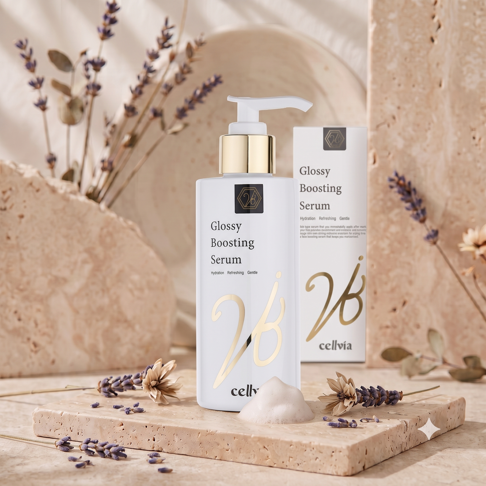
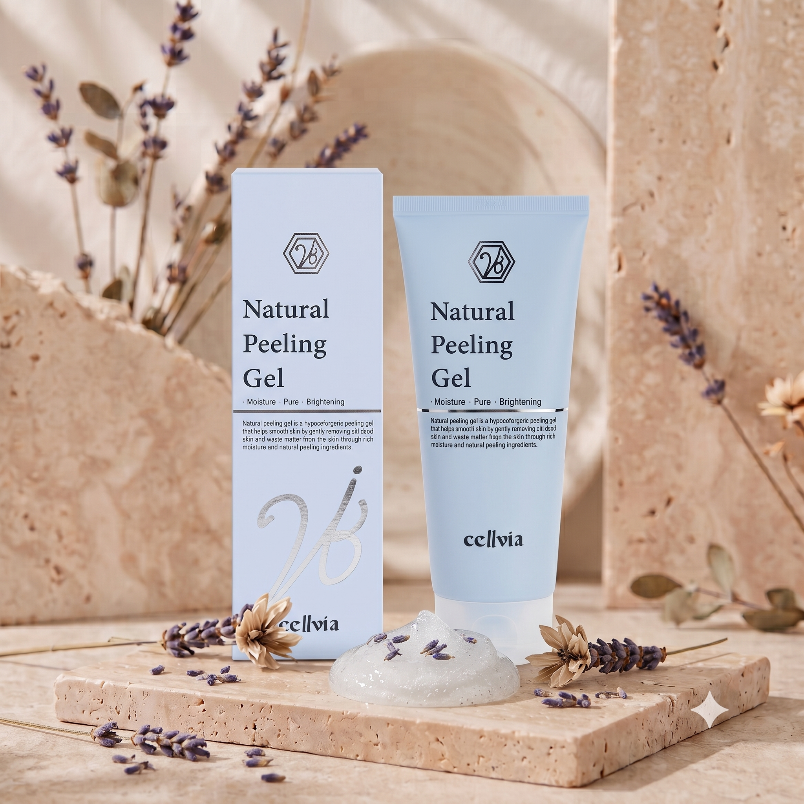
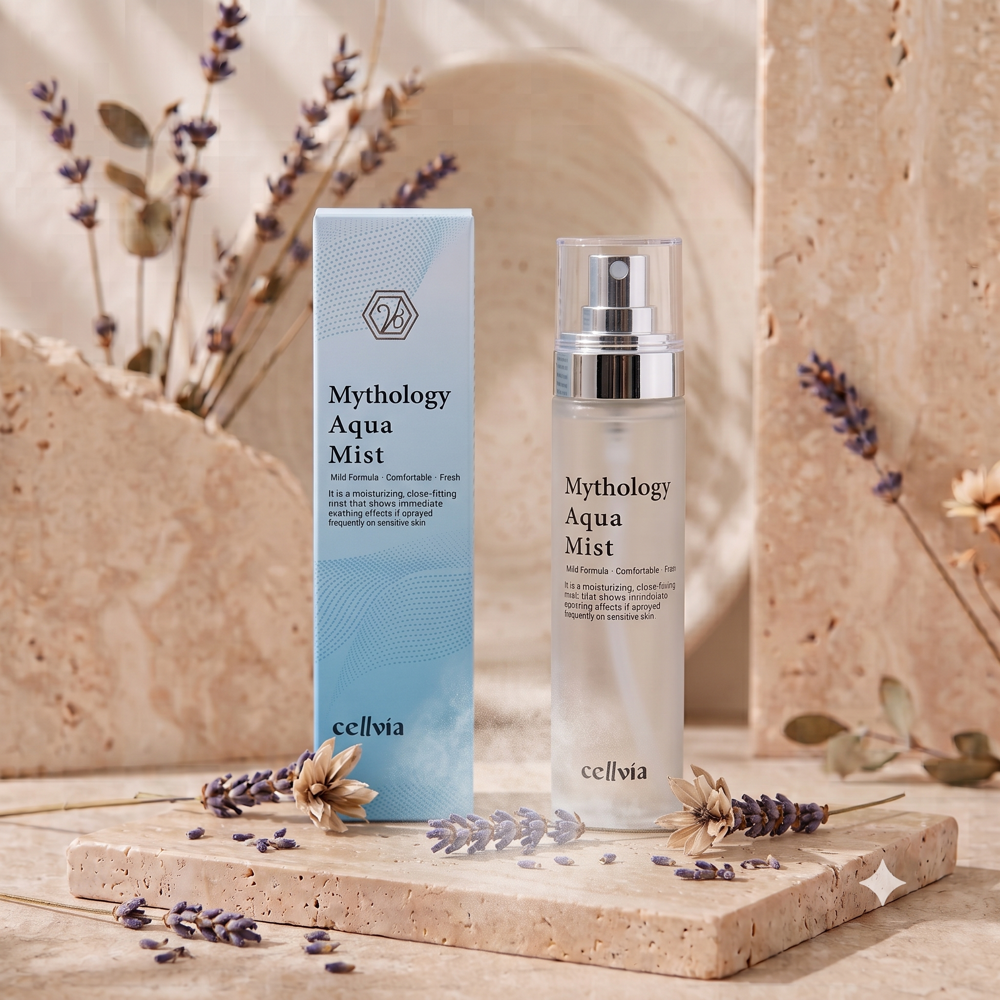
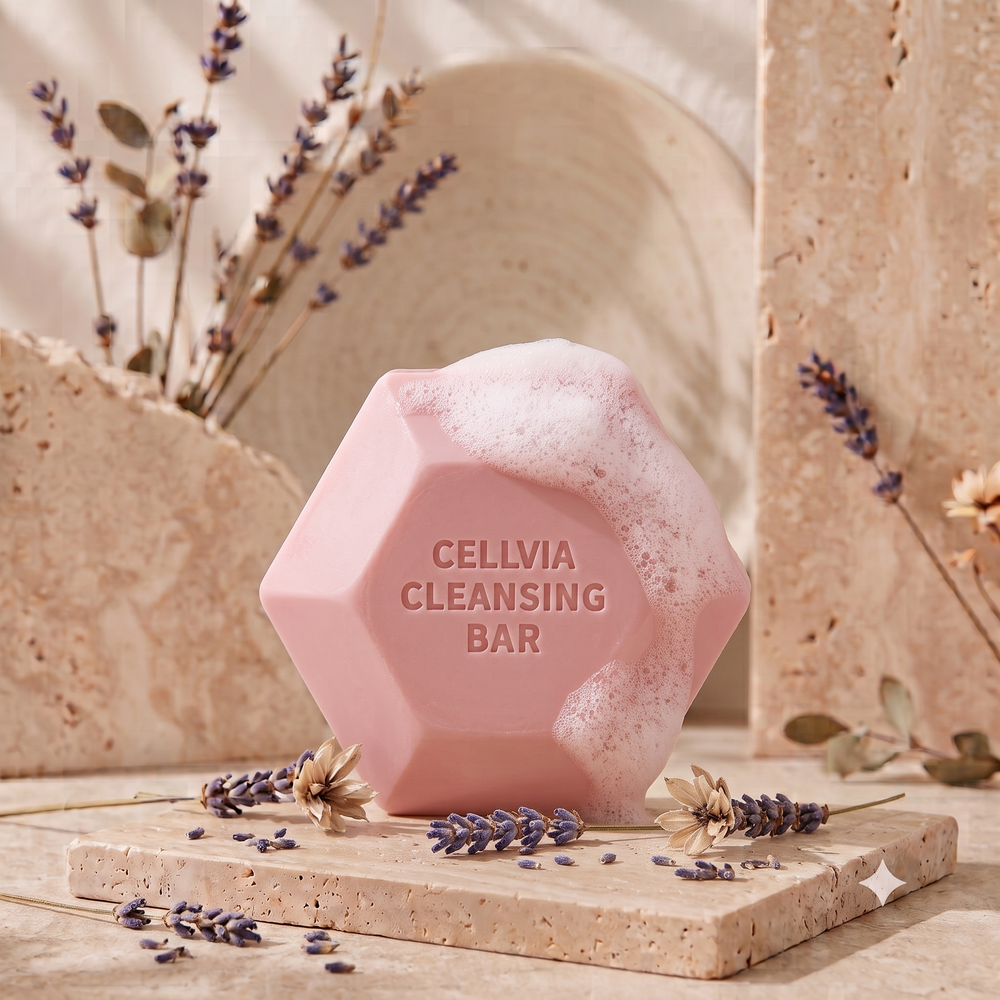
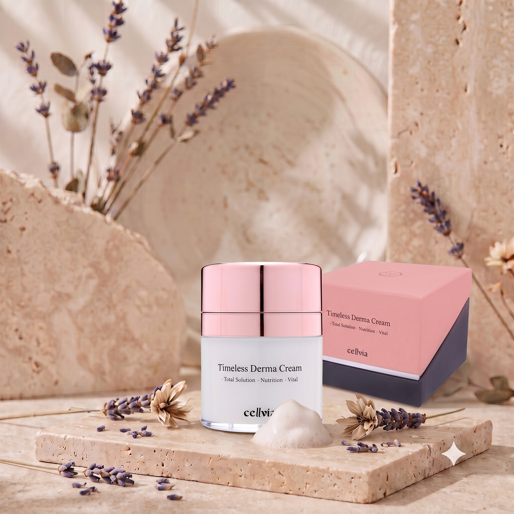

セルビア ラディアンス 6種セット
クレンジングから保湿まで、クリアで健やかな肌の土台を作るルーティン

バブル ディープ クレンザー
200 ml × 1 ea
微細な泡が毛穴の奥までやさしくタッチ！
W洗顔不要の、マイルドなディープクレンジング
- ✓生クリームのような微細バブルが、メイクや汚れをすっきりとオフ
- ✓肌の潤いを守りながら洗い上げる、マイルドな洗浄力
- ✓洗顔後もつっぱりにくく、しっとりとした仕上がり
- ✓様々な肌タイプの方にお使いいただけるマイルド処方
主要成分
※上記の内容は、原料の一般的な性質に関する説明です。

グロッシー ブースティング セラム
200 ml × 1 ea
理想のメイクアップのためのファーストステップ
肌のキメを整え、潤いを呼び込むブースターセラム
- ✓洗顔後の肌にスピーディーに水分を補給
- ✓みずみずしく軽やかなテクスチャーで、ベタつかずなじむ
- ✓次に使うスキンケアやメイクアップのノリをサポート
- ✓年齢に応じた潤い・ツヤ・ハリのエイジングケア
主要成分
※上記の内容は、原料の一般的な性質に関する説明です。

ナチュラル ピーリング ジェル
150 ml × 1 ea
ガラスのようにクリアな印象の肌へ
古い角質をやさしくオフするソフトピーリング
- ✓肌表面のごわつきや不要な古い角質をマイルドに絡め取る
- ✓ピーリング後もつっぱりにくい、しっとりとした使用感
- ✓メイクのノリが悪いと感じる時のスペシャルケアに
- ✓11種類の植物由来エキス配合で肌をすこやかに保つ
主要成分
※上記の内容は、原料の一般的な性質に関する説明です。

ミソロジー アクア ミスト
100 ml × 1 ea
毎日の水分をチャージする、肌のオアシス
いつでもどこでも潤いベールを形成
- ✓乾燥を感じた時に、こまめに水分を補給できるスプレータイプ
- ✓細かなミストが肌をふんわりと包み込み、潤いを与える
- ✓乾燥によるくすみを防ぎ、明るく澄んだ印象の肌へ導く
- ✓マイルドなフォーミュラで、日中のメイクの上からも使用可能
主要成分
※上記の内容は、原料の一般的な性質に関する説明です。

クレンジング バー
100 g × 1 ea
クリーミーな泡で肌をいたわる
pHバランスを考えたマイルドな洗顔石鹸
- ふんわりとしたきめ細かい泡で、不要な汚れをやさしくオフ
- 洗顔後のつっぱり感を抑え、潤いを残す洗い上がり
- ココナッツベースの洗浄成分を使用した、肌にやさしい処方
- 顔だけでなく、全身のボディケアにもご使用いただけます
主要成分
※上記の内容は、原料の一般的な性質に関する説明です。

タイムレス ダーマ クリーム
50 ml × 1 ea
ハリ不足の悩みに、まっすぐ届く。
塗るたびに実感する、豊かな潤いと弾むようなハリ感
- ✓高密度・高機能な肌のコンディショニングケア
- ✓なじませるほどに実感する、ピンとしたハリ感
- ✓明るい印象のハリツヤ肌へ導くデイリーエイジングケア*
- ✓最後まで衛生的に使えるエアレス容器を採用
主要成分
※上記の内容は、原料の一般的な性質に関する説明です。
*年齢に応じたケア